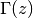
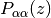
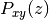
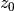
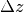
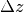
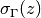

py3_press_prof Docstrings¶
Measurement of the pressure profile across a planar bilayer.
This programs does statistics on the instantaneous realizations of the pressure profile of planar bilayers. The program assumes that the bilayer normal points in the z-direction.
- class py3_press_prof.CheckPressTensFile(tens_file='')¶
Pressure-tensor file properties.
Verifies the existence and proper format of the provided input file.
Parameters: tens_file (string) – Pressure-tensor file.
- class py3_press_prof.PressProf(tens_file)¶
Pressure profile, , across a planar bilayer.
It is assumed that the bilayer normal points along the
 direction and
that its normal cross-section spans the region
direction and
that its normal cross-section spans the region ![\left[-h/2, h/2\right]](_images/math/0dfcb9f7a8240f35d900f96cae3907bf4a7f5c29.png) . Under these
assumptions, the definition of reduces to:
. Under these
assumptions, the definition of reduces to:![\Gamma(z) = P_{zz}(z) - \left[P_{xx}(z) + P_{yy}(z)\right] / 2](_images/math/541f42582b967f17eccd0d4cc0c48a7d64a90bfd.png) ,
,where  are the diagonal components of the pressure tensor,
 ,
across the bilayer
,
across the bilayer
 .
.The equilibrium properties of are evaluated from the input file tens_file, which stores the set of realizations (samples) of
at different time steps. This file should have the following format:height 


 

# Commented or labeled lines must start with `#`  %f %f %f %f %f %f 
%f %f %f %f %f %f . . . . . . . . . . . . . . . . . . . . . 
%f %f %f %f %f %f # Every sample terminates with two blank lines \n \n where the first column stores the spatial discretization along the bilayer normal, consisting of
 slabs of width .
slabs of width .The creation of PressProf objects requires passing tens_file as a unique argument:
press_prof_object = PressProf('pressure_tensor_file.ext')
This returns an object containing the average pressure profile (evaluated over all the samples) and its corresponding local standard deviations, . These two quantities are stored in prof and prof_err, respectively.
The n-th integral momenta of , defined as
 ,
,is evaluated upon request, by calling the method get_momentum(int(n)) (notice that this returns an array with only slabs / 2 entries).
Parameters: - moms ([[float]]) – List of integral momenta arrays.
- __moms_index ({int: int}) – Dictionary to get the index of the requested integral momentum from the array moms.
- height ([float]) – Spatial discretization along the bilayer normal.
- prof ([float]) – Pressure profile across the bilayer: .
- prof_err ([float]) – Standard deviation of of the pressure profile: .
- samples (int) – Number of instantaneous pressure-tensor measurements in the input file.
- slabs (int) – Number of slabs across the bilayer normal: .
- slab_width (float) – Width of the discretization slabs: .
- get_momentum(grade)¶
Retrieval of integral momenta.
- class py3_press_prof.PressTens(tens=[], tens_err=[], height=[])¶
Pressure tensor across the bilayer.
The pressure tensor is stored in a 2D, nested list of N-1 rows and 6 columns:
%f %f %f %f %f %f %f %f %f %f %f %f . . . . . . . . . . . . . . . . . . %f %f %f %f %f %f where columns represent the different Cartesian components of the pressure tensor and rows stand for the spatial discretization along the bilayer normal (which is assumed to point along the z-direction). A similar data structure stores the local standard deviation of each tensor component.
Parameters: - tens ([[float]]) – Average value of the different pressure tensor components.
- tens_err ([[float]]) – Standard deviation of the pressure tensor components.
- height ([float]) – Spatial discretization along the bilayer normal (z-axis).
- py3_press_prof.main()¶
Main sentinel for standalone and module usage.